Last updated: 2026-11-09
Live track record: 1137 closed picks, 33% win rate. Average predicted probability 42% vs actual 50% (6 decided). 127 still open. Full track record →
| Ticker | Sector | Dir | Price | RSI(7) | % vs 20D | Volume | Entry | Stop | Target | R:R | Avg Hold | Probability | Hist. win rate | Sample | Earnings |
|---|---|---|---|---|---|---|---|---|---|---|---|---|---|---|---|
| FTNT | Information Technology | LONG | $122.47 | 22.8 | -22.5% | 0.85x | $122.47 | $116.35 | $158.02 | 5.81:1 | 8.0 | 50% | 73% | 11 | 87d |
| FFIV | Information Technology | LONG | $317.75 | 20.3 | -20.7% | 0.73x | $317.75 | $301.86 | $400.89 | 5.23:1 | 8.5 | 20% | 50% | 8 | 78d |
| FISV | Financials | SHORT | $63.52 | 91.7 | 22.6% | 1.13x | $63.52 | $66.7 | $51.8 | 3.69:1 | 8.6 | 41% | 71% | 7 | 93d |
| MU | Information Technology | LONG | $733.15 | 35.7 | -15.4% | 1.03x | $733.15 | $696.49 | $866.2 | 3.63:1 | 9.0 | 34% | 64% | 11 | 44d |
| NVDA | Information Technology | LONG | $178.67 | 21.9 | -14.6% | 3.33x 🔥 | $178.67 | $169.74 | $209.16 | 3.41:1 | 7.4 | 41% | 71% | 14 | 8d |
| FIX | Industrials | LONG | $1113.23 | 41.1 | -14.0% | 0.99x | $1113.23 | $1057.57 | $1295.05 | 3.27:1 | 6.7 | 43% | 58% | 12 | 101d |
| ILMN | Health Care | LONG | $220.78 | 35.5 | -13.8% | 0.78x | $220.78 | $209.74 | $256.21 | 3.21:1 | 7.0 | 48% | 55% | 11 | 87d |
| IDXX | Health Care | SHORT | $706.65 | 77.2 | 19.1% | 0.97x | $706.65 | $741.98 | $593.42 | 3.2:1 | 9.0 | 30% | 60% | 10 | 84d |
| MOS | Materials | SHORT | $22.77 | 81.1 | 19.1% | 0.88x | $22.77 | $23.91 | $19.13 | 3.2:1 | 7.8 | 53% | 53% | 17 | 106d |
| CLX | Consumer Staples | SHORT | $105.53 | 91.8 | 18.1% | 1.52x 🔥 | $105.53 | $110.81 | $89.38 | 3.06:1 | 9.9 | 67% | 82% | 11 | 85d |
| DVN | Energy | LONG | $42.4 | 17.8 | -13.2% | 1.45x | $42.4 | $40.28 | $48.86 | 3.05:1 | 8.0 | 74% | 82% | 11 | 99d |
| VLO | Energy | LONG | $356.75 | 31.8 | -12.2% | 1.05x | $356.75 | $338.91 | $406.49 | 2.79:1 | 10.4 | 71% | 71% | 7 | 80d |
| MPC | Energy | LONG | $389.88 | 33.0 | -12.0% | 1.14x | $389.88 | $370.39 | $443.25 | 2.74:1 | 10.4 | 73% | 73% | 11 | 85d |
| PNR | Industrials | SHORT | $70.2 | 71.0 | 15.7% | 0.46x | $70.2 | $73.71 | $60.68 | 2.71:1 | 13.5 | 43% | 50% | 4 | 85d |
| CMG | Consumer Discretionary | SHORT | $35.74 | 76.7 | 15.3% | 0.71x | $35.74 | $37.53 | $30.99 | 2.66:1 | 9.6 | 60% | 68% | 19 | 92d |
| AKAM | Information Technology | LONG | $80.29 | 31.3 | -11.4% | 2.67x 🔥 | $80.29 | $76.28 | $90.61 | 2.57:1 | 10.8 | 39% | 69% | 16 | 101d |
| DAL | Industrials | SHORT | $91.8 | 73.3 | 13.5% | 1.02x | $91.8 | $96.39 | $80.86 | 2.38:1 | 9.0 | 46% | 54% | 13 | 65d |
| EW | Health Care | SHORT | $104.71 | 88.4 | 13.5% | 1.38x | $104.71 | $109.95 | $92.23 | 2.38:1 | 10.5 | 62% | 92% | 12 | 92d |
| ALGN | Health Care | SHORT | $174.26 | 76.4 | 13.3% | 2.06x 🔥 | $174.26 | $182.97 | $153.86 | 2.34:1 | 8.6 | 45% | 60% | 15 | 86d |
| WYNN | Consumer Discretionary | SHORT | $86.7 | 75.8 | 13.1% | 1.3x | $86.7 | $91.03 | $76.64 | 2.32:1 | 9.0 | 62% | 62% | 16 | 94d |
| LOW | Consumer Discretionary | SHORT | $232.1 | 77.4 | 12.9% | 0.89x | $232.1 | $243.71 | $205.64 | 2.28:1 | 10.2 | 37% | 67% | 9 | 9d |
| GEN | Information Technology | SHORT | $29.8 | 70.3 | 12.6% | 0.75x | $29.8 | $31.29 | $26.46 | 2.24:1 | 7.6 | 46% | 54% | 13 | 87d |
| NWSA | Communication Services | LONG | $26.57 | 27.6 | -9.9% | 1.39x | $26.57 | $25.24 | $29.5 | 2.21:1 | 7.7 | 41% | 64% | 14 | 87d |
| XYZ | Financials | SHORT | $88.56 | 73.8 | 12.4% | 1.21x | $88.56 | $92.99 | $78.82 | 2.2:1 | 4.1 | 28% | 58% | 12 | 112d |
| GEHC | Health Care | SHORT | $84.03 | 74.5 | 12.3% | 0.95x | $84.03 | $88.23 | $74.84 | 2.19:1 | 8.6 | 45% | 75% | 16 | 86d |
| FANG | Energy | LONG | $178.17 | 22.1 | -9.8% | 1.28x | $178.17 | $169.26 | $197.63 | 2.18:1 | 8.8 | 32% | 62% | 16 | 105d |
| NCLH | Consumer Discretionary | SHORT | $18.43 | 66.7 | 12.1% | 0.74x | $18.43 | $19.35 | $16.43 | 2.17:1 | 7.5 | 46% | 53% | 15 | 112d |
| ADM | Consumer Staples | LONG | $69.84 | 13.1 | -9.8% | 1.38x | $69.84 | $66.35 | $77.39 | 2.16:1 | 8.4 | 70% | 100% | 7 | 85d |
| LRCX | Information Technology | LONG | $221.31 | 44.4 | -9.6% | 1.2x | $221.31 | $210.24 | $244.92 | 2.13:1 | 5.0 | 27% | 57% | 7 | 79d |
| DD | Industrials | SHORT | $155.14 | 74.5 | 11.9% | 0.95x | $155.14 | $162.9 | $138.67 | 2.12:1 | 10.0 | 27% | 57% | 14 | 92d |
| KEYS | Information Technology | LONG | $288.97 | 41.2 | -9.5% | 0.77x | $288.97 | $274.52 | $319.25 | 2.1:1 | 8.8 | 37% | 67% | 9 | 10d |
| NWS | Communication Services | LONG | $29.33 | 30.8 | -9.1% | 1.42x | $29.33 | $27.86 | $32.28 | 2.01:1 | 6.6 | 44% | 67% | 15 | 87d |
LONG = oversold, expected to bounce back up toward the 20-day average. SHORT = overbought, expected to pull back down toward the 20-day average. Stop-loss = 5% against the position. Probability = this ticker's historical win rate minus penalties when the chart structure is broken (hover for reasons). 🔥 means volume was 1.5x+ the 20-day average. Tickers with earnings due within 3 days are excluded. Macro events pulled live from a public economic calendar feed (high-impact USD events only). Mechanical screen only — check news before acting. Not financial advice.
Probability 73% → 50%: broke below 60d swing low (-15); below 200-day avg, downtrend (-8)
Earlier signals on FTNT: 2026-11-06: ⏳ still open 2026-11-04: ❌ hit stop -5.0% 2026-11-03: ❌ hit stop -5.0%
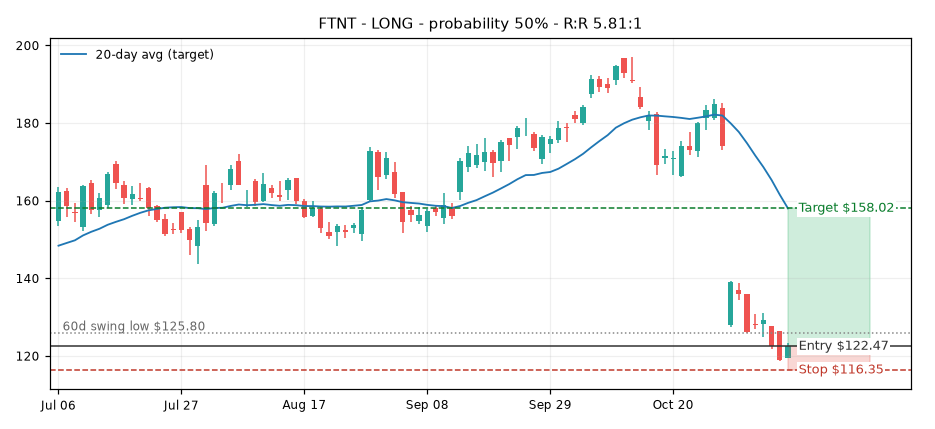
Probability 50% → 20%: broke below 60d swing low (-15); below 200-day avg, downtrend (-8); lower highs and lower lows (-7)
Earlier signals on FFIV: 2026-11-06: ⏳ still open 2026-11-04: ❌ hit stop -5.0% 2026-11-03: ❌ hit stop -5.0%
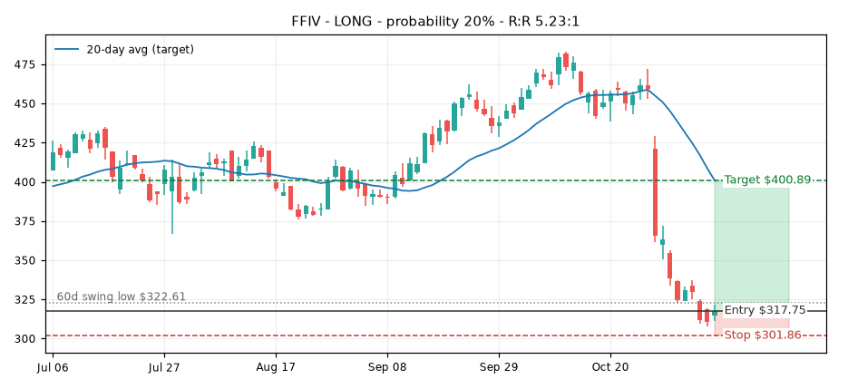
Probability 71% → 41%: broke above 60d swing high (-15); above 200-day avg, uptrend (-8); higher highs and higher lows (-7)
Earlier signals on FISV: 2026-11-04: ⏳ still open 2026-11-03: ❌ hit stop -5.0%
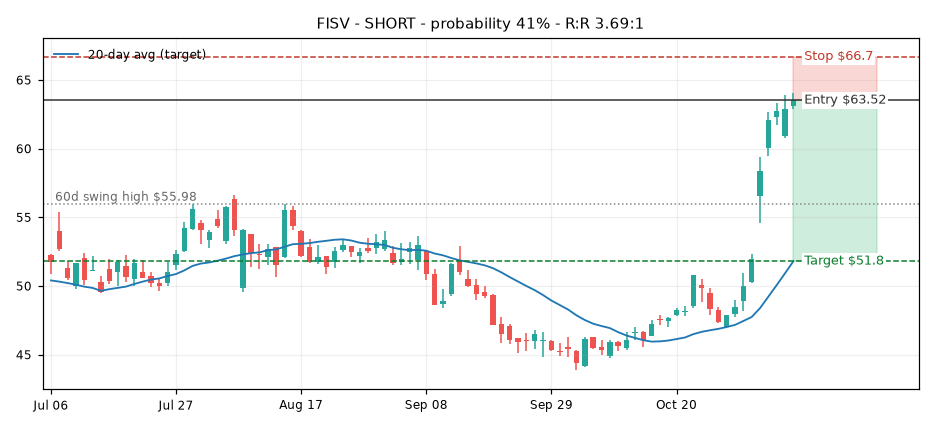
Probability 64% → 34%: broke below 60d swing low (-15); below 200-day avg, downtrend (-8); lower highs and lower lows (-7)
Earlier signals on MU: 2026-11-05: ⏳ still open 2026-11-04: ❌ hit stop -5.6% 2026-11-02: ❌ hit stop -5.0%
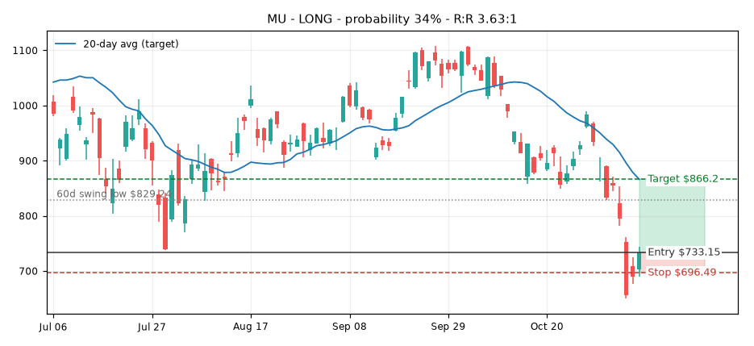
Probability 71% → 41%: broke below 60d swing low (-15); below 200-day avg, downtrend (-8); lower highs and lower lows (-7)
Earlier signals on NVDA: 2026-11-05: ❌ hit stop -5.1%
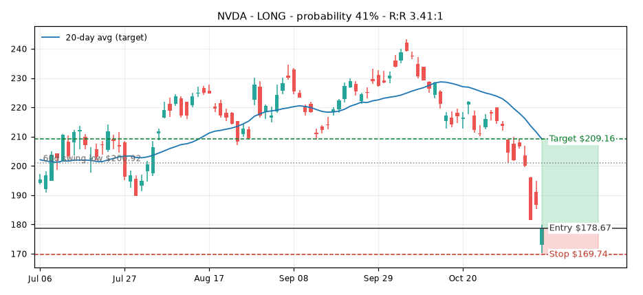
Probability 58% → 43%: below 200-day avg, downtrend (-8); lower highs and lower lows (-7)
Earlier signals on FIX: 2026-11-05: ⏳ still open 2026-11-04: ❌ hit stop -5.0% 2026-11-03: ❌ hit stop -12.6%
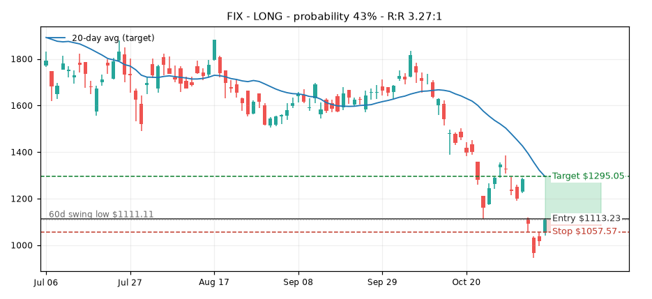
Probability 55% → 48%: lower highs and lower lows (-7)
Earlier signals on ILMN: 2026-11-05: ⏳ still open 2026-11-04: ❌ hit stop -5.0% 2026-11-03: ❌ hit stop -5.0%
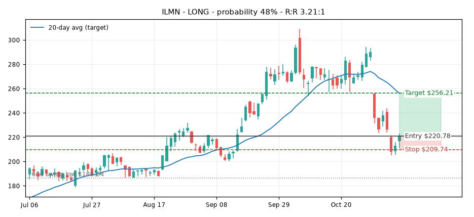
Probability 60% → 30%: broke above 60d swing high (-15); above 200-day avg, uptrend (-8); higher highs and higher lows (-7)
Earlier signals on IDXX: 2026-11-04: ⏳ still open 2026-11-03: ❌ hit stop -5.0% 2026-11-02: ❌ hit stop -5.0%
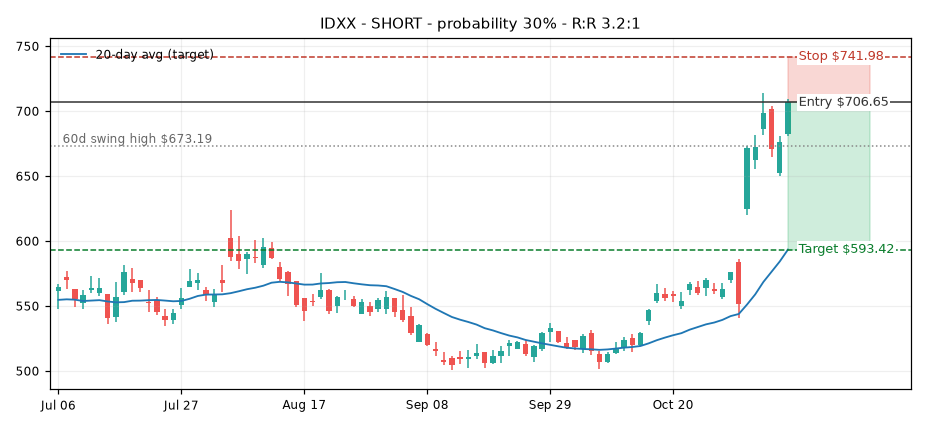
Probability 53%: no structure warnings.
Earlier signals on MOS: 2026-11-05: ❌ hit stop -5.0% 2026-11-04: ❌ hit stop -5.0% 2026-10-23: ✅ hit target +12.7%
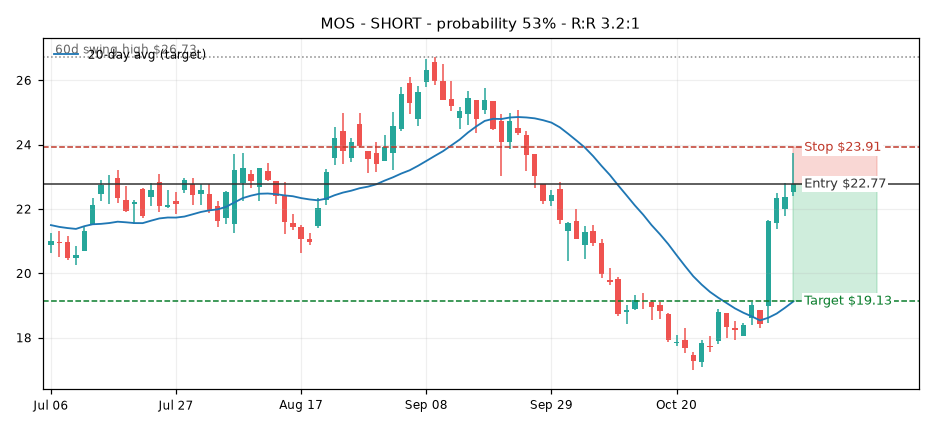
Probability 82% → 67%: above 200-day avg, uptrend (-8); higher highs and higher lows (-7)
Earlier signals on CLX: 2026-11-04: ❌ hit stop -5.0% 2026-09-08: ❌ hit stop -5.0% 2026-09-07: ❌ hit stop -5.0%
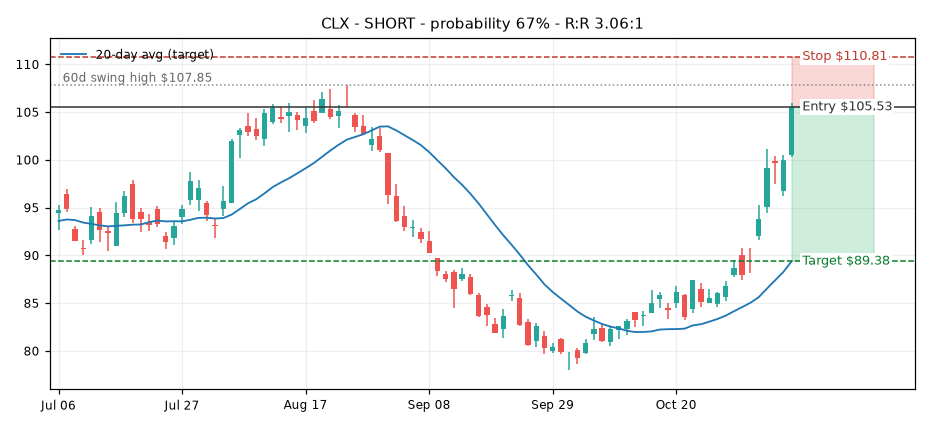
Probability 82% → 74%: below 200-day avg, downtrend (-8)
Earlier signals on DVN: 2026-11-06: ⏳ still open 2026-08-24: ❌ hit stop -5.0% 2026-08-24: ❌ hit stop -5.4%
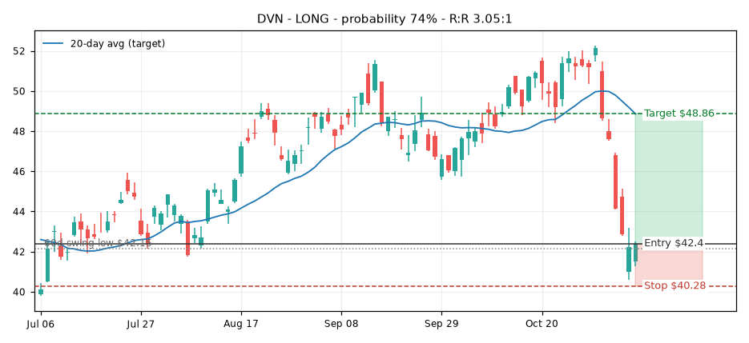
Probability 71%: no structure warnings.
Earlier signals on VLO: 2026-11-06: ⏳ still open 2026-11-04: ❌ hit stop -5.0% 2026-11-02: ❌ hit stop -5.0%
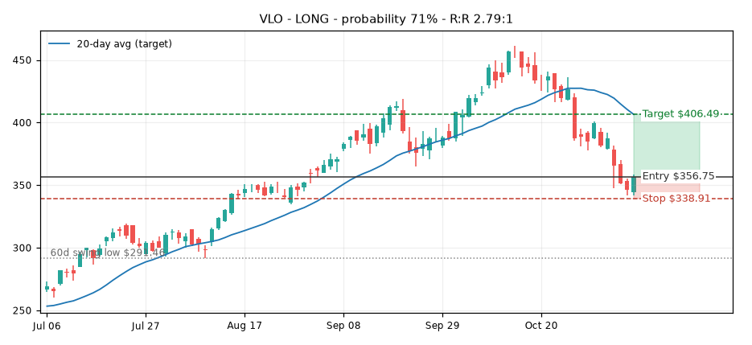
Probability 73%: no structure warnings.
Earlier signals on MPC: 2026-11-04: ⏳ still open 2026-08-25: ❌ hit stop -5.5% 2026-08-24: ❌ hit stop -5.6%
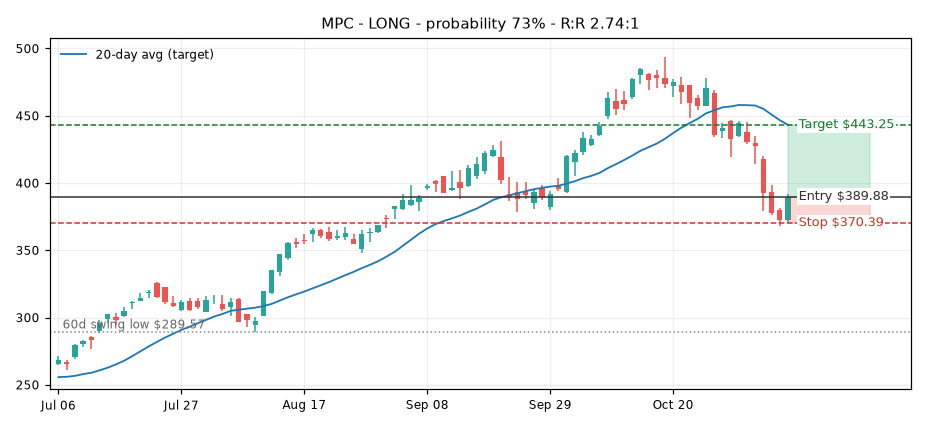
Probability 50% → 43%: higher highs and higher lows (-7)
Earlier signals on PNR: 2026-11-04: ⏳ still open 2026-11-03: ❌ hit stop -5.0% 2026-11-02: ⏳ still open
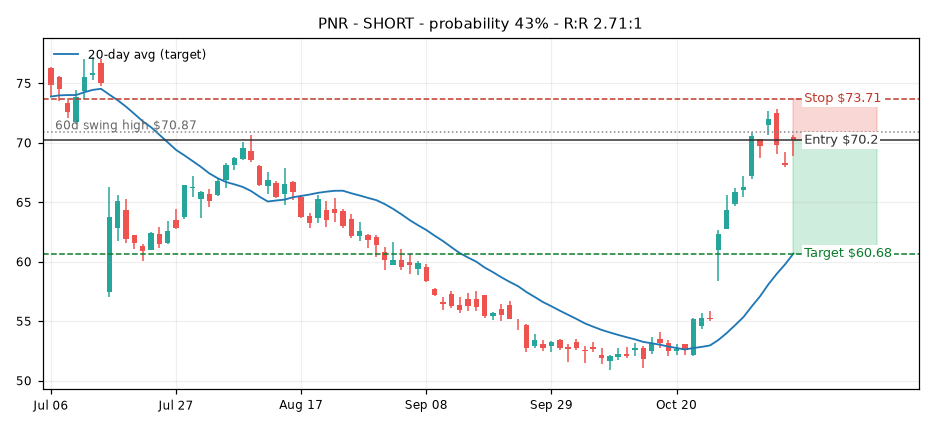
Probability 68% → 60%: above 200-day avg, uptrend (-8)
Earlier signals on CMG: 2026-11-04: ⏳ still open 2026-08-25: ✅ hit target +7.2% 2026-08-24: ❌ hit stop -5.0%
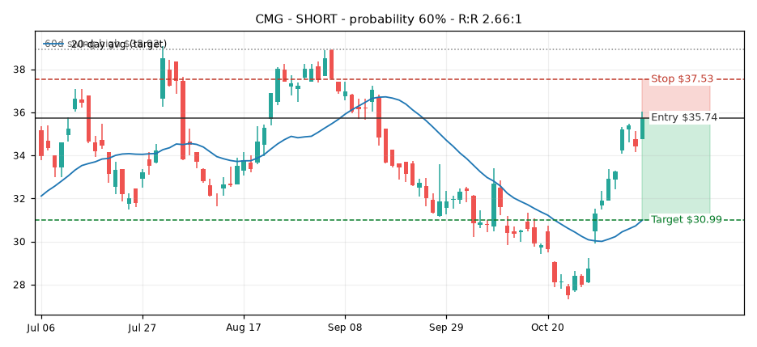
Probability 69% → 39%: broke below 60d swing low (-15); below 200-day avg, downtrend (-8); lower highs and lower lows (-7)
Earlier signals on AKAM: 2026-11-06: ❌ hit stop -5.2% 2026-10-22: ❌ hit stop -5.0% 2026-10-21: ❌ hit stop -5.0%
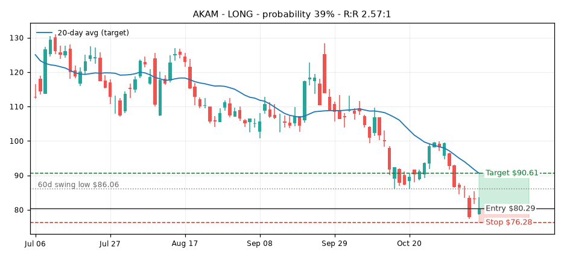
Probability 54% → 46%: above 200-day avg, uptrend (-8)
Earlier signals on DAL: 2026-09-01: ⌛ expired +9.0% 2026-08-31: ⌛ expired +8.5% 2026-08-24: ❌ hit stop -5.0%
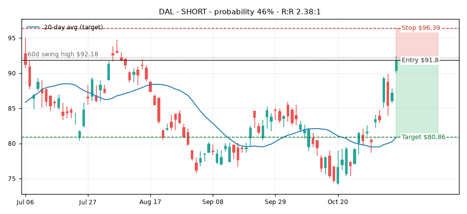
Probability 92% → 62%: broke above 60d swing high (-15); above 200-day avg, uptrend (-8); higher highs and higher lows (-7)
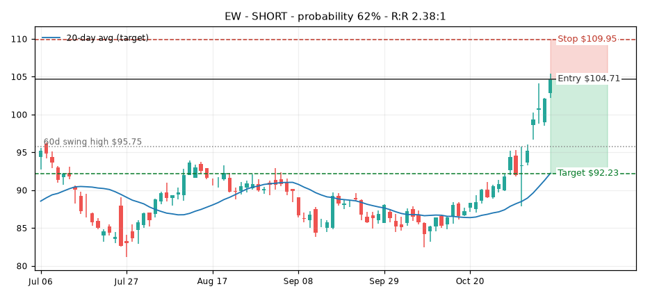
Probability 60% → 45%: above 200-day avg, uptrend (-8); higher highs and higher lows (-7)
Earlier signals on ALGN: 2026-08-25: ❌ hit stop -5.0% 2026-08-24: ❌ hit stop -5.0%
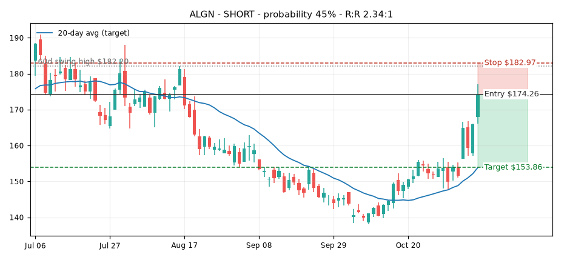
Probability 62%: no structure warnings.
Earlier signals on WYNN: 2026-09-21: ❌ hit stop -5.0% 2026-09-18: ❌ hit stop -5.0% 2026-09-17: ❌ hit stop -5.0%
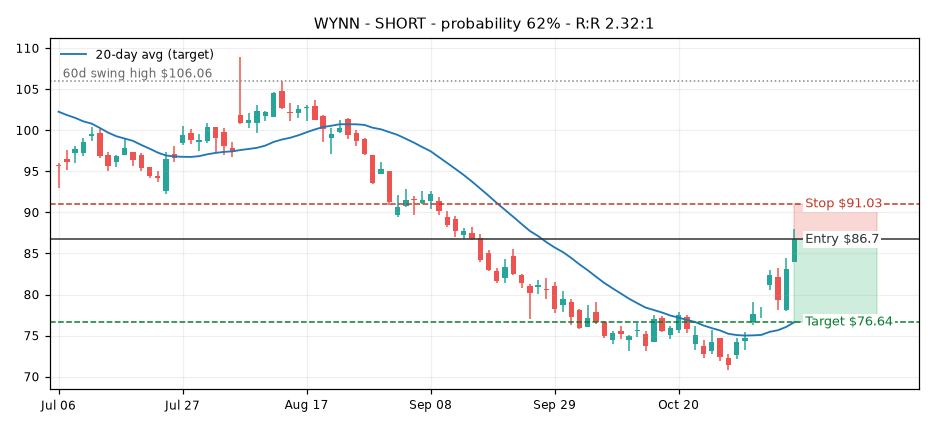
Probability 67% → 37%: broke above 60d swing high (-15); above 200-day avg, uptrend (-8); higher highs and higher lows (-7)
Earlier signals on LOW: 2026-11-04: ⏳ still open 2026-11-02: ❌ hit stop -5.0%
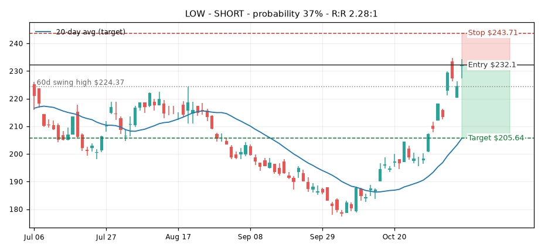
Probability 54% → 46%: above 200-day avg, uptrend (-8)
Earlier signals on GEN: 2026-11-04: ⏳ still open 2026-11-03: ⏳ still open 2026-11-02: ⏳ still open
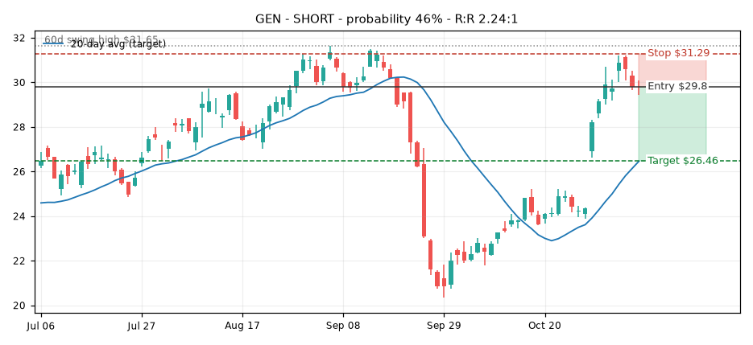
Probability 64% → 41%: broke below 60d swing low (-15); below 200-day avg, downtrend (-8)
Earlier signals on NWSA: 2026-11-05: ⏳ still open 2026-08-25: ✅ hit target +6.0% 2026-08-24: ⌛ expired +3.7%
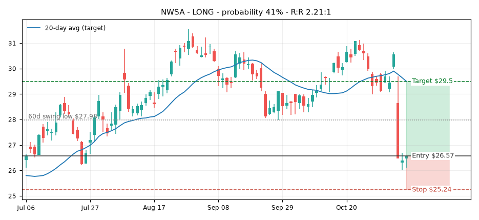
Probability 58% → 28%: broke above 60d swing high (-15); above 200-day avg, uptrend (-8); higher highs and higher lows (-7)
Earlier signals on XYZ: 2026-11-04: ⏳ still open
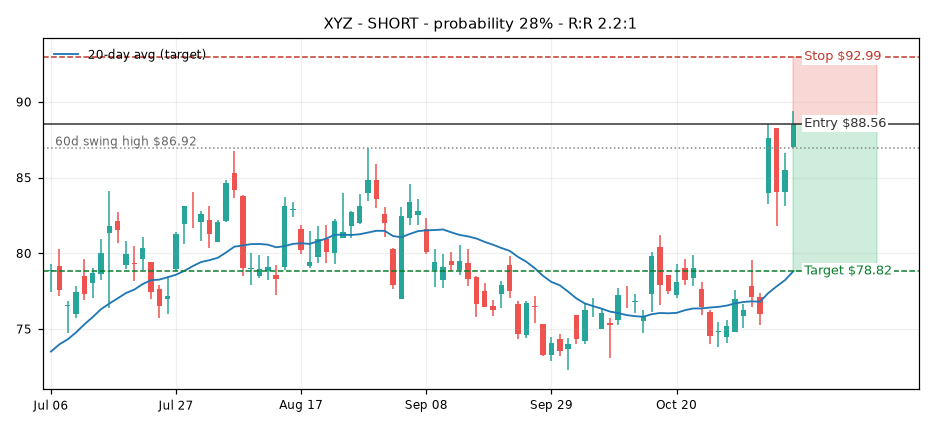
Probability 75% → 45%: broke above 60d swing high (-15); above 200-day avg, uptrend (-8); higher highs and higher lows (-7)
Earlier signals on GEHC: 2026-11-04: ⏳ still open 2026-11-03: ❌ hit stop -5.0% 2026-11-02: ❌ hit stop -5.0%
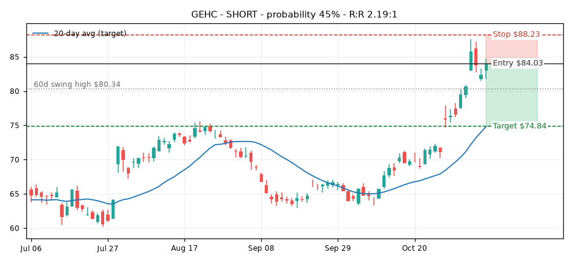
Probability 62% → 32%: broke below 60d swing low (-15); below 200-day avg, downtrend (-8); lower highs and lower lows (-7)
Earlier signals on FANG: 2026-11-06: ⏳ still open 2026-08-24: ✅ hit target +5.6%
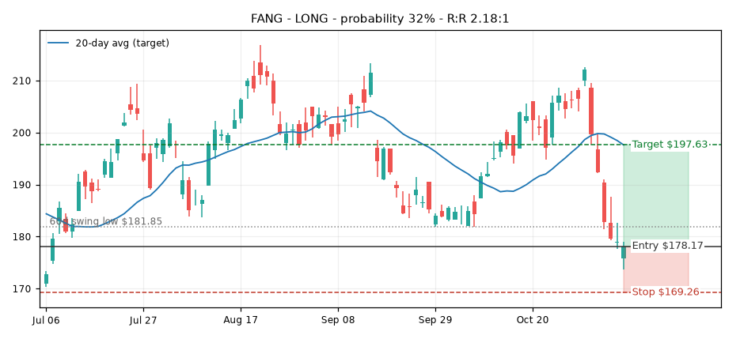
Probability 53% → 46%: higher highs and higher lows (-7)
Earlier signals on NCLH: 2026-11-04: ⏳ still open 2026-11-02: ⏳ still open 2026-10-30: ❌ hit stop -5.0%
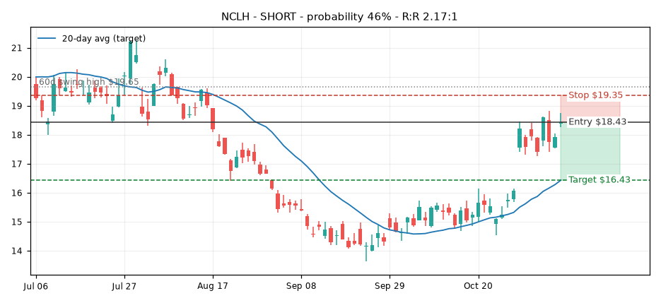
Probability 100% → 70%: broke below 60d swing low (-15); below 200-day avg, downtrend (-8); lower highs and lower lows (-7)
Earlier signals on ADM: 2026-11-04: ⏳ still open 2026-11-03: ⏳ still open
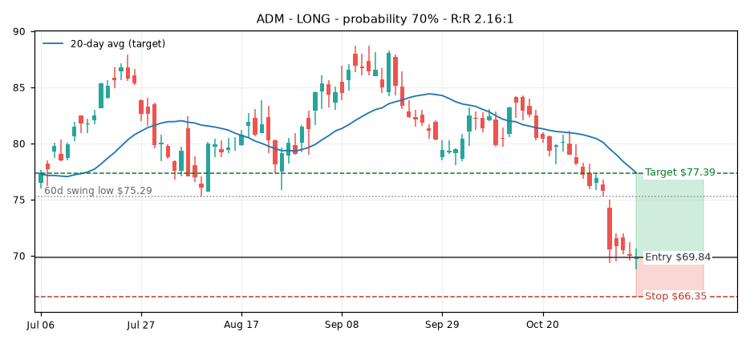
Probability 57% → 27%: broke below 60d swing low (-15); below 200-day avg, downtrend (-8); lower highs and lower lows (-7)
Earlier signals on LRCX: 2026-11-05: ⏳ still open 2026-11-04: ❌ hit stop -5.6% 2026-11-03: ❌ hit stop -9.1%
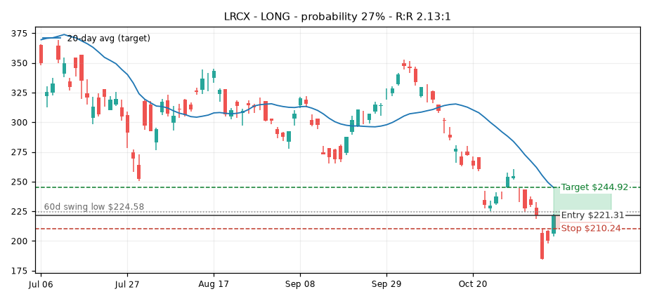
Probability 57% → 27%: broke above 60d swing high (-15); above 200-day avg, uptrend (-8); higher highs and higher lows (-7)
Earlier signals on DD: 2026-11-04: ⏳ still open 2026-11-03: ⏳ still open 2026-08-25: ❌ hit stop -5.0%
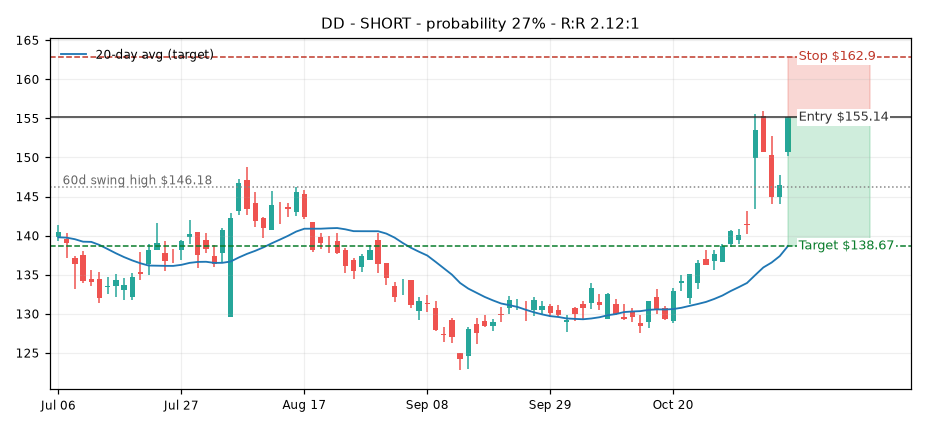
Probability 67% → 37%: broke below 60d swing low (-15); below 200-day avg, downtrend (-8); lower highs and lower lows (-7)
Earlier signals on KEYS: 2026-11-05: ⏳ still open 2026-11-04: ❌ hit stop -5.0% 2026-11-03: ❌ hit stop -5.0%
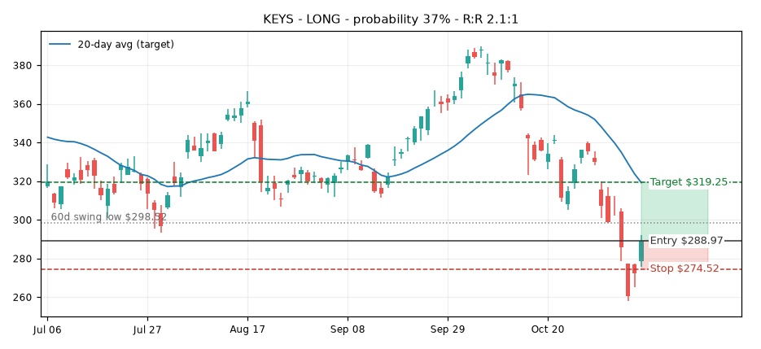
Probability 67% → 44%: broke below 60d swing low (-15); below 200-day avg, downtrend (-8)
Earlier signals on NWS: 2026-11-05: ⏳ still open 2026-08-25: ✅ hit target +5.9% 2026-08-24: ✅ hit target +5.3%
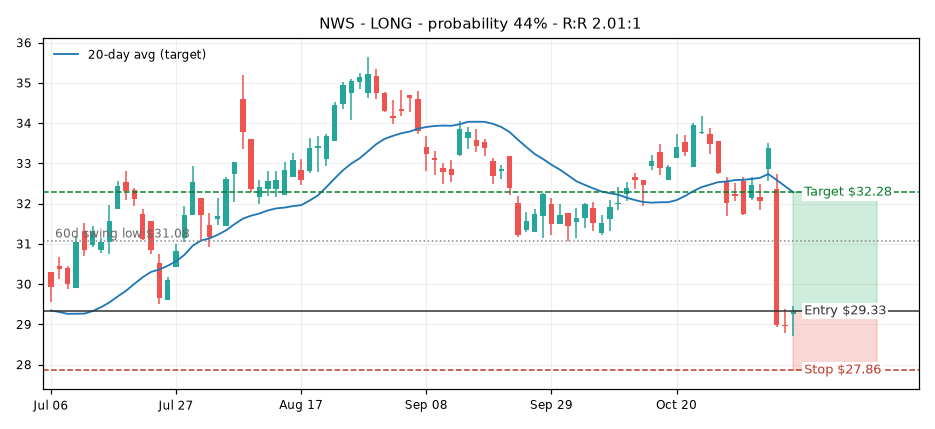